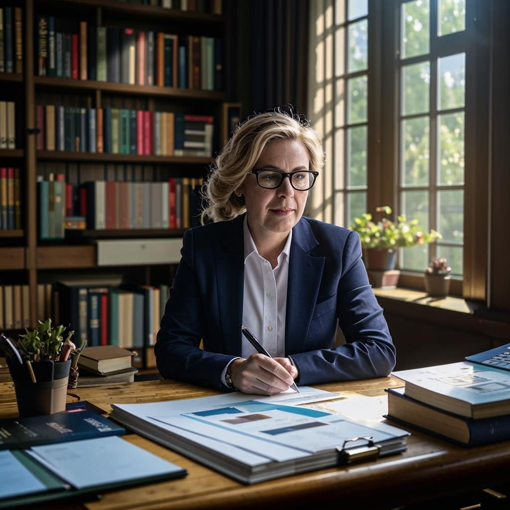

Начальник ПЭО
ФИО: Максим Юрьевич Соколов
E-mail: max.sokolov@museum.ru
Дата рождения: 17 марта 1980 г.
Город: Москва
Типичные задачи:
- Составление бюджета и финансовых планов музея.
- Анализ экономической эффективности мероприятий и проектов.
- Контроль расходов и доходов учреждения.
- Подготовка отчетов для руководства и внешних контролирующих органов.
- Разработка предложений по оптимизации затрат и повышению доходности.
Экономист

ФИО: Татьяна Викторовна Смирнова
E-mail: tatyana.smirnova@museum.ru
Дата рождения: 25 июня 1992 г.
Город: Екатеринбург
Типичные задачи:
-
Анализ финансовой деятельности
Оценка экономических показателей, подготовка аналитических справок.
-
Планирование бюджета
Участие в разработке смет, бюджетировании текущих и перспективных периодов.
-
Контроль исполнения бюджетов
Мониторинг расходования выделенных средств, выявление отклонений от плана.
-
Подготовка отчетности
Формирование документов для внутреннего учета и внешнего контроля.
-
Экономическое обоснование решений
Консультации сотрудников по вопросам финансов и экономики.
Старший кассир
ФИО: Ольга Сергеевна Иванова
E-mail: olga.ivanova@museum.ru
Дата рождения: 10 декабря 1985 г.
Город: Нижний Новгород
Типичные задачи:
-
Организация кассовых операций
Обеспечение своевременного приема платежей посетителей.
-
Контроль денежных средств
Инкассация наличных денег, учет поступлений и выплат.
-
Работа с билетами
Оформление билетов, контроль правильности выдачи посетителям.
-
Оформление кассовой документации
Заполнение приходных и расходных ордеров, ведение журнала кассира.
-
Обучение младших кассиров
Передача опыта молодым сотрудникам, помощь в освоении обязанностей.